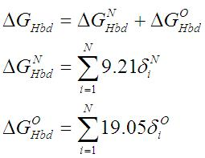
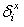

This function counts the number of backbone nitrogen and oxygen atoms with accessible surface area equal to cero. The theory behind this parameter consists in the intuitive fact that these atoms, when are exposed, they should be involved in an H-bond with water molecules of the solvent and in an internal environment they should form an intramolecular H-bond in order to compensate the breaking of the protein-water interaction.
It is implemented as follows:

Where  takes value one if the particular atom has an area value of cero and if is not involved in an H-bond. The conditions that are considered to classify an O---N pair as H-bonded are summarized in the following figure: